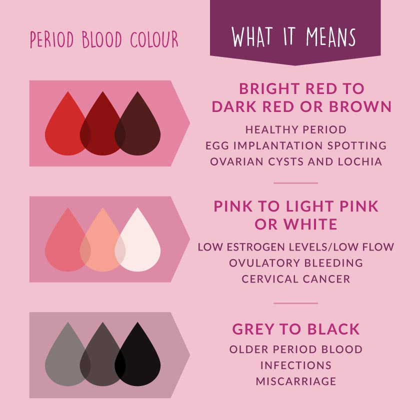
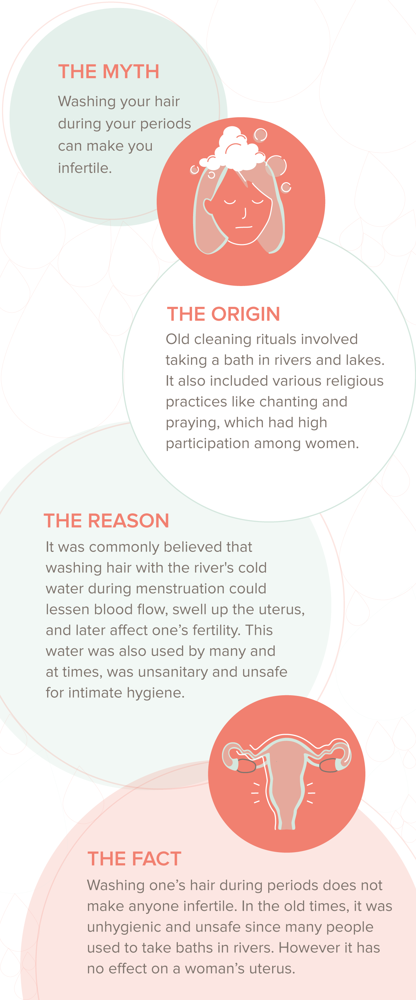
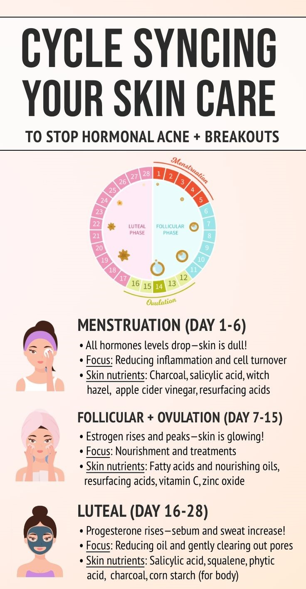

Harmonal Changes
Our bodies contain chemicals called hormones. These chemicals are the body’s messenger system for various systems and processes, including the menstrual cycle.
An imbalance can arise if you have too much or too little of one or more hormones. The body requires precise levels of hormones to function properly. Even a minor imbalance can cause significant effects, especially with the menstrual cycle.
Symptoms
Depending on which hormones are imbalanced, as well as the underlying cause of the hormone imbalance, symptoms can vary. They can include:
● irregular, light, or very heavy periods
● hair loss
● vaginal dryness or pain with intercourse
● acne
● weight gain
● hot flashes or night sweats
● skin tags
Irregular Bleeding

Irregular and heavy periods can be successfully treated with hormonal therapy in the setting of overweight, underweight or normal weight women.
Heavy and irregular bleeding may also be the result of an abnormal pregnancy. A miscarriage or a pregnancy outside of the uterus may cause abnormal or heavy bleeding.
Heavy and irregular bleeding may also be the result of benign tumors of the uterus such as fibroid tumors or endometrial polyps. These may require surgical removal.
A malfunctioning thyroid gland can cause heavy or absent periods.
Heavy and irregular bleeding may also be the result of gonorrhea and chlamydia infections. These are readily treated with antibiotics.
Abnormal bleeding may also be caused by cancerous or pre-cancerous conditions of the cervix or uterus. The earlier they are diagnosed the easier they are to treat.
Hair loss and washing hair is a myth?
Increased blood loss during heavy periods can lead to iron deficiency anaemia. Iron deficiency can subsequently contribute to hair loss during your period, so yes, this is possible. It’s important to contact your doctor if you feel that this may be happening to you as it is treatable with medication.
Some women may notice that their scalp becomes oilier after ovulation - there is some truth in this as the body releases more progesterone and testosterone during this time which can cause excess sebum production.

Acne
Several hormones in the body control the menstrual cycle. The average cycle lasts about 28 days, and on each one of those days, hormone levels can change. The changes the body goes through in the first half of the cycle are predominantly controlled by estrogen, and the second half is influenced by progesterone.
If there are acne flares one to two weeks before menstruation, if they go away with the onset of a period, and if this pattern repeats at least twice in a row, it may be because of premenstrual acne.
During this time, the ratio of estrogen and progesterone changes, which can affect the occurrence of acne breakouts. The drop in these hormones a few days before a period may also trigger acne flare-ups.

Symptoms of period acne
Period acne is different than the typical acne that occurs during other weeks of the menstrual cycle. Breakouts of pimples from period acne are usually on the lower half of the face (chin, cheeks), jawline, and neck. They are usually red, inflamed, raised bumps (papules) that rarely develop into pustules (papules with pus). They can be very frustrating, but try to resist squeezing them. This can make them worse and take longer to go away.
Weight gain and Hot flashes
Period-related weight gain is caused by hormonal fluctuations. It may be the result of water retention, overeating, sugar cravings, and skipping workouts due to cramps. Period bloating and gastrointestinal issues might also create the sensation of weight gain.
To ease water retention, stay hydrated and reduce salt intake. Move around and get regular exercise. You can also take diuretics for water retention or magnesium for bloating.
If you have severe cramps, abdominal pain, and bloating during your period, talk to your doctor.
HOT FLASHES: A hot flash is a sudden burst of heat, often in the upper body and face. Doctors do not fully understand what causes them, but they believe changes in hormone levels affect how the body regulates its temperature.
Some symptoms of hot flashes include:
● sudden heat in the chest, neck, or face
● pink or red. flushing in the skin
● rapid heartbeat
● sweating